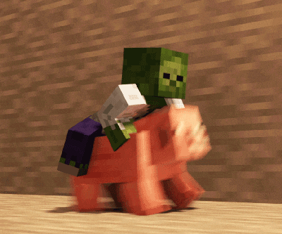

Minecraft

Minecraft (від англ. mine craft — досл. «шахтарське ремесло») — відеогра в жанрі пісочниці у відкритому світі з поглядом від першої/третьої особи, розроблена та видана Mojang Studios у 2011 році. Гра започаткувала однойменну серію, для всіх творів якої характерний мінімалістичний кубічний дизайн.
Гра розроблена у 2009 році шведським програмістом Маркусом Перссоном, відомим також як «Notch», і надалі розробляється заснованою Маркусом Перссоном компанією Mojang, котра належить Microsoft Studios. Minecraft належить до ігор з найширшою аудиторією і визнана найпродаванішою відеогрою в історії.
